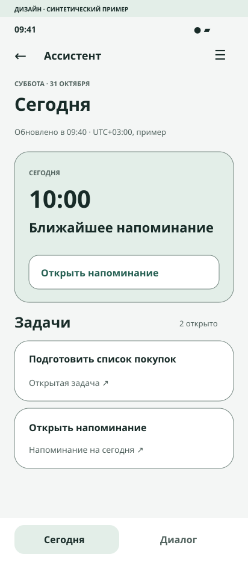
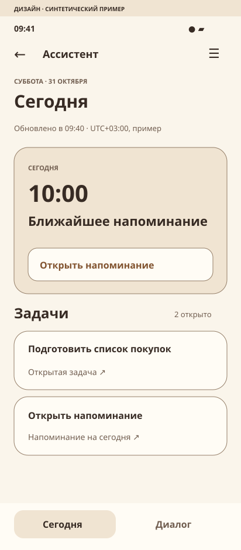

A · Тихий рабочий стол
Нейтральный фон, глубокий зелёный акцент, компактные карточки и короткие статусы. Выбранная рабочая версия, светлая/тёмная темы.

Открыть интерактивный прототип AAS-83 · СИНТЕТИЧЕСКИЙ ДИЗАЙН
Направление A выбрано координатором для обратимого первого MVP. Это не финальная подпись PO или G4/G5.
Нейтральный фон, глубокий зелёный акцент, компактные карточки и короткие статусы. Выбранная рабочая версия, светлая/тёмная темы.

Открыть интерактивный прототип AТёплые поверхности и коричневый акцент при том же контенте и приоритетах. Сравнительный концепт; не выбран, без обещания готовой второй системы.
